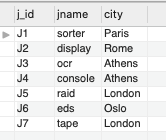

Topics covered:
In section 4 of the first lesson we used the SELECT statement
to retrieve information from the database. However, this just retrieved all
of the records from the desired column(s). We might want more specific
information from only certain parts and records of the database. There are
many different ways we can get different bits of information from a database.
Some of those are detailed here.
In order to return non-repeating values in the result columns we use the
DISTINCT clause. The example used in the lesson was to imagine
you want to know all of the first names of people in your class. You want to
know just what the names themselves are, not how many people are called each
name. The following is a table of first names of the people in a class:
| first_name |
|---|
| Sophie |
| Shelly |
| Hannah |
| Joanna |
| Sophie |
| Hannah |
We can use the DISTINCT operator to return the names above but
without duplicates. The code to do this is:
SELECT DISTINCT
table_alias.column_name
FROM
table_name AS table_alias;
The following shows the code that would be used in our example:
SELECT DISTINCT
cp.first_name
FROM
class_participants AS cp;
And this is what the output would be:
| first_name |
|---|
| Sophie |
| Shelly |
| Hannah |
| Joanna |
If SELECT DISTINCT was run on two columns (e.g. first name and
last name), then it would return unique combinations. So if
the two different Hannah's had different last names, the first name "Hannah"
would still appear twice in the results.
We can apply conditions to the results we want to return so that we only
return records than meet specific criteria. One way of doing this is to use
the WHERE clause:
SELECT
table_alias.column_name
FROM
table_name AS table_alias
WHERE
table_alias.column_name = "condition";
We practiced this in class using a database called PARTS, which contains several tables about different projects, their suppliers and the parts that the suppliers are supplying to the different projects. One question we were asked was to return all of the projects that are run in London. This is what the relevant table looks like and is called project:
The following is the code that would be needed to select the project names (which are under the column jname) of only the projects that are based in London:
SELECT
j.jname
FROM
project AS j
WHERE
j.city = 'London';
Constraints are rules that can be applied to the columns of a table. They are set when you create the table. When you later add information into the table, if the data you enter does not meet the requirements of the contraint you have added then it will return an error message. In this way, they ensure the accuracy and reliability of the data in the table.
There are several different types of constraint that we can apply to a column in a table. They are documented in the table below.
| Constraint | Details |
|---|---|
PRIMARY KEY |
This is applied to the column that is used to uniquely identify each record in a table. There can only be one primary key in a table but it can be multiple columns, in which case it is known as a compound key. The primary key will never change and can be thought of as an index. |
FOREIGN KEY |
This restricts the column to contain only the values that are present in the primary key of a different table. In this way, a column that is a foreign key provides a link to another table (the basis of a relational database). There can be multiple foreign keys in a table. The values of the column with a foreign key don't have to be unqiue. |
NOT NULL |
This requires a value to be entered for the column to which this constraint is applied. |
UNIQUE |
A column with this constraint would require a unique value for each record in the column. It is like a primary key but there can be more than one of these. |
CHECK |
This constraint is used to restrict the value that can be entered in a column between a declared range. A check is performed on the entered value before it is stored in the database. |
DEFAULT |
This sets a default value for the column, which will be entered for each record unless a value is specified. |
Constraints are declared when you create the table (although they can also be declared later on too). The code to assign a constraint when creating a new table can be done in a couple of ways. In this first example, a constraint is declared after the data type:
CREATE TABLE table_name (
column1, DATA TYPE CONSTRAINT TYPE,
column2, DATA TYPE CONTRAINT TYPE,
column3, DATA TYPE CONSTRAINT TYPE
);
In this second example, a constraint is applied after all of the columns have been declared.
CREATE TABLE table_name (
column1, DATA TYPE,
column2, DATA TYPE,
column3, DATA TYPE,
CONSTRAINT contraint_name CONTRAINT TYPE (column_name)
);
An example of a table we created in class using this code is shown below. In
this example, the constraint NOT NULL is added in-line to the
customer_id column and the PRIMARY KEY
constraint is added at the end to the same column. The name of the
PRIMARY KEY constraint is given as pk_customer_id.
CREATE TABLE customer (
customer_id INTEGER NOT NULL,
first_name VARCHAR(55),
last_name VARCHAR(55),
CONSTRAINT pk_customer_id PRIMARY KEY (customer_id)
);
Database normalisation is a key aspect of creating a relational database. It is the process of a designing a database so that each independent piece of information only occurs once in the database (except for the forgeign keys linking the tables). Each table therefore contains data on one specific topic only, minimising duplicate data, avoiding data modifcation issues and helping to simplify queries.
Understanding normalisation is harder than it appears at first. Although the basic idea is easy to get to grips with, when you try to do it yourself you end up (or I did at least) wondering how far to split different columns into new tables and how many to group together. The degree of normalisation that you go for should fit into one of the several different types of normalisation technique. Each one of these has a set of rules that defines it. We were given a homework task of reading about these different types.
The different normalisation techniques are called database normal forms. The following is a list of the different ones that are used:
The first normal form is the least normalised of the forms while the sixth is the most normalised. The theory of database normalisation in SQL is still being developed. However, for most purposes you would only need to normalise to the third normal form. I will briefly cover the first three forms here.
This has the smallest degree of normalisation. There are only two rules for 1NF:
In 1NF, the primary key can be a compound key, i.e. it can comprise of two columns. For example, you might have two people with the same name in the table who live at two different addresses. To uniquely identify a record in this situation, you wouldn't be able to use only their name, you would require their address as well.
2NF is the same as 1NF except the primary key must be a single column. This is usually done by using an id column. The rules for 2NF are therefore:
3NF is apparently what you should aim for with your database. To satisfy the third normal form, your database must be in 2NF but must also not contain any transistive functional dependencies. These are when values in one column of a table are dependent on a value in another column of the same table. There was an example of this in my project. I had a table containing information about different cabins that people could book to stay in on a holiday retreat. The table contained information about whether the cabin had a hot tub, the cabin capacity and what type of view there was from the cabin. However, it also had a column containing nightly rates but these depended on the contents of the other columns. For example, if a cabin got a hot tub then the nightly rate would increase. Therefore I moved the nightly rates into a different table. The rules for 3NF are therefore:
The last section of this lesson covered the different categories of SQL commands and how you can use some of the commands to modify the data and the database.
DDL consists of SQL statements that are used to create and modify the structure of a database, its objects and tables. The following table lists some of the core DDL commands and what they do.
| DDL command | Details |
|---|---|
CREATE |
Used to create a database or its objects (e.g. tables, functions). |
ALTER |
Used to change an existing object, e.g. change column data type, add/ remove column, change column constraints. |
DROP |
Remove objects and data from the database. Will respond with an error if you try to drop a column that is a foreign key. Be careful with this one! |
RENAME |
Rename an existing object in the database. |
DML commands handle the manipulation of data and are the most commonly used commands. We have seen most of these already:
| DML command | Details |
|---|---|
SELECT |
Can also be considered part of Data Query Language (DQL). Used to retrieve data from the database. |
INSERT |
Inserts data into a table. |
UPDATE |
Used to modify columns in a single table. Used with the SET
keyword and the WHERE clause.
|
DELETE |
Deletes one or more rows in a table. It is permanent so be careful. Use
the WHERE clause!
|